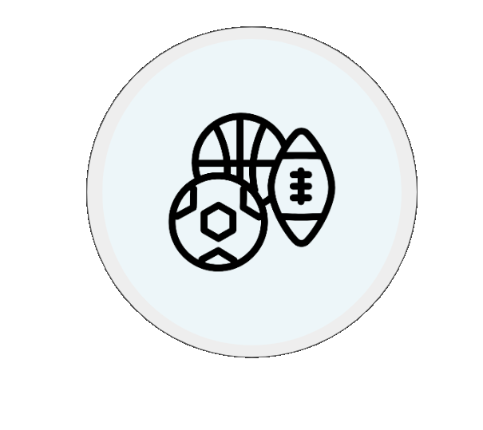

Actividad Física
Según la Organización Mundial de la Salud (2022) realizar actividad física regular previene enfermedades no transmisibles (como cardíacas, diabetes y varios tipos de cáncer) y mejora directamente la salud mental, la calidad de vida y el bienestar. Sin embargo, 1 de cada 4 adultos no realiza suficiente actividad física
Ver gráfico
